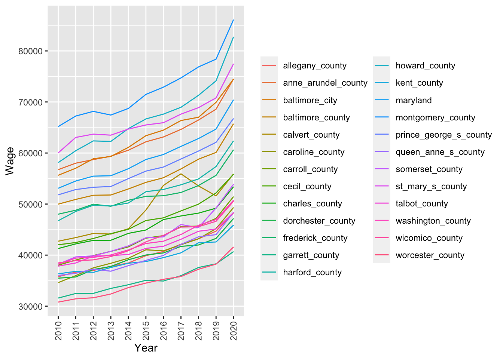

Code
suppressMessages(library(DT))
suppressMessages(library(tidyverse))
suppressMessages(library(kableExtra))Rohit Farmer ![]()
2022-10-26 Added sections for Kaggle and other platforms
2022-10-25 Initial uncomplete post and Kaggle notebook
R and Python, the two most popular data science and machine learning programming languages, come with a default data set for demonstration and educational purposes. Moreover, many popular data science libraries such as tidyverse, lme4, nlme, MASS, survival, Bioconductor, and sklearn, amongst others, also contain example datasets for unit testing and demonstration. However, even though the included data are carefully selected, most of them are old (from the 1970s and ’80s) and hence limited in sample size (due to the limitation in the then available computing power) and may not be more than a toy example in the current context. Therefore, in a learning path after utilizing the default datasets for initial testing of a statistical function or a machine learning model, it’s both desired and recommended to practice on a real-life dataset. Working on a real-life dataset that is apt in the current context of data science and computing resources would not only teach the desired statistical/machine learning technique but also expose the learner to challenges that are usually not associated with toy datasets—for example, class imbalance, missing values, wrongly labeled datatypes, statistical noise, etc.
For a real-life dataset, I recommend using open data released by government agencies and other non-government organizations as part of their openness in operations. These datasets are not only of adequate size but also represent what is happening around us in a field of interest. Many countries around the world release data to inform citizens about their operations and fair practices. However, I do not think, other than the established data analytics-based companies and research groups, ordinary citizens ever look into such resources. I bet many would not even know that their government agencies are making ample amounts of data available for scrutiny. Therefore, in my opinion, budding data scientists should take it upon themselves to utilize these datasets in place of toy examples to not only justify the existence of such a resource but also, through analysis, gain first-hand insight and transfer it to their friends, family, and broader audience. Such a practice by amateur data scientists may have far-reaching implications than what I can convey here.
In the sections below, for completeness, I will briefly discuss how to access default datasets available in R and then move on to other resources, including open government data mentioned earlier.
Please check out this notebook on Kaggle to work with the code presented in this post https://www.kaggle.com/code/rohitfarmer/007-open-data-for-datascience. Some of the code is changed slightly to match Kaggle’s notebook environment.
suppressMessages(library(DT))
suppressMessages(library(tidyverse))
suppressMessages(library(kableExtra))In R (v4.1.3), there are 104 datasets for various statistical and machine-learning tasks. The commands in the cell below list all the datasets available by default (Table 1) and across all the installed packages, respectively. This article summarizes some of R’s popular datasets, namely mtcars, iris, etc.
# Default datasets
data()
# Datasets across all the installed packages
data(package = .packages(all.available = TRUE))dat <- data()
dat <- as_tibble(dat$results) %>% dplyr::select(-LibPath) %>%
dplyr::filter(Package == "datasets")
knitr::kable(dat) %>%
kable_styling(bootstrap_options = c("striped", "hover")) %>%
scroll_box(width = "100%", height = "300px")| Package | Item | Title |
|---|---|---|
| datasets | AirPassengers | Monthly Airline Passenger Numbers 1949-1960 |
| datasets | BJsales | Sales Data with Leading Indicator |
| datasets | BJsales.lead (BJsales) | Sales Data with Leading Indicator |
| datasets | BOD | Biochemical Oxygen Demand |
| datasets | CO2 | Carbon Dioxide Uptake in Grass Plants |
| datasets | ChickWeight | Weight versus age of chicks on different diets |
| datasets | DNase | Elisa assay of DNase |
| datasets | EuStockMarkets | Daily Closing Prices of Major European Stock Indices, 1991-1998 |
| datasets | Formaldehyde | Determination of Formaldehyde |
| datasets | HairEyeColor | Hair and Eye Color of Statistics Students |
| datasets | Harman23.cor | Harman Example 2.3 |
| datasets | Harman74.cor | Harman Example 7.4 |
| datasets | Indometh | Pharmacokinetics of Indomethacin |
| datasets | InsectSprays | Effectiveness of Insect Sprays |
| datasets | JohnsonJohnson | Quarterly Earnings per Johnson & Johnson Share |
| datasets | LakeHuron | Level of Lake Huron 1875-1972 |
| datasets | LifeCycleSavings | Intercountry Life-Cycle Savings Data |
| datasets | Loblolly | Growth of Loblolly pine trees |
| datasets | Nile | Flow of the River Nile |
| datasets | Orange | Growth of Orange Trees |
| datasets | OrchardSprays | Potency of Orchard Sprays |
| datasets | PlantGrowth | Results from an Experiment on Plant Growth |
| datasets | Puromycin | Reaction Velocity of an Enzymatic Reaction |
| datasets | Seatbelts | Road Casualties in Great Britain 1969-84 |
| datasets | Theoph | Pharmacokinetics of Theophylline |
| datasets | Titanic | Survival of passengers on the Titanic |
| datasets | ToothGrowth | The Effect of Vitamin C on Tooth Growth in Guinea Pigs |
| datasets | UCBAdmissions | Student Admissions at UC Berkeley |
| datasets | UKDriverDeaths | Road Casualties in Great Britain 1969-84 |
| datasets | UKgas | UK Quarterly Gas Consumption |
| datasets | USAccDeaths | Accidental Deaths in the US 1973-1978 |
| datasets | USArrests | Violent Crime Rates by US State |
| datasets | USJudgeRatings | Lawyers' Ratings of State Judges in the US Superior Court |
| datasets | USPersonalExpenditure | Personal Expenditure Data |
| datasets | UScitiesD | Distances Between European Cities and Between US Cities |
| datasets | VADeaths | Death Rates in Virginia (1940) |
| datasets | WWWusage | Internet Usage per Minute |
| datasets | WorldPhones | The World's Telephones |
| datasets | ability.cov | Ability and Intelligence Tests |
| datasets | airmiles | Passenger Miles on Commercial US Airlines, 1937-1960 |
| datasets | airquality | New York Air Quality Measurements |
| datasets | anscombe | Anscombe's Quartet of 'Identical' Simple Linear Regressions |
| datasets | attenu | The Joyner-Boore Attenuation Data |
| datasets | attitude | The Chatterjee-Price Attitude Data |
| datasets | austres | Quarterly Time Series of the Number of Australian Residents |
| datasets | beaver1 (beavers) | Body Temperature Series of Two Beavers |
| datasets | beaver2 (beavers) | Body Temperature Series of Two Beavers |
| datasets | cars | Speed and Stopping Distances of Cars |
| datasets | chickwts | Chicken Weights by Feed Type |
| datasets | co2 | Mauna Loa Atmospheric CO2 Concentration |
| datasets | crimtab | Student's 3000 Criminals Data |
| datasets | discoveries | Yearly Numbers of Important Discoveries |
| datasets | esoph | Smoking, Alcohol and (O)esophageal Cancer |
| datasets | euro | Conversion Rates of Euro Currencies |
| datasets | euro.cross (euro) | Conversion Rates of Euro Currencies |
| datasets | eurodist | Distances Between European Cities and Between US Cities |
| datasets | faithful | Old Faithful Geyser Data |
| datasets | fdeaths (UKLungDeaths) | Monthly Deaths from Lung Diseases in the UK |
| datasets | freeny | Freeny's Revenue Data |
| datasets | freeny.x (freeny) | Freeny's Revenue Data |
| datasets | freeny.y (freeny) | Freeny's Revenue Data |
| datasets | infert | Infertility after Spontaneous and Induced Abortion |
| datasets | iris | Edgar Anderson's Iris Data |
| datasets | iris3 | Edgar Anderson's Iris Data |
| datasets | islands | Areas of the World's Major Landmasses |
| datasets | ldeaths (UKLungDeaths) | Monthly Deaths from Lung Diseases in the UK |
| datasets | lh | Luteinizing Hormone in Blood Samples |
| datasets | longley | Longley's Economic Regression Data |
| datasets | lynx | Annual Canadian Lynx trappings 1821-1934 |
| datasets | mdeaths (UKLungDeaths) | Monthly Deaths from Lung Diseases in the UK |
| datasets | morley | Michelson Speed of Light Data |
| datasets | mtcars | Motor Trend Car Road Tests |
| datasets | nhtemp | Average Yearly Temperatures in New Haven |
| datasets | nottem | Average Monthly Temperatures at Nottingham, 1920-1939 |
| datasets | npk | Classical N, P, K Factorial Experiment |
| datasets | occupationalStatus | Occupational Status of Fathers and their Sons |
| datasets | precip | Annual Precipitation in US Cities |
| datasets | presidents | Quarterly Approval Ratings of US Presidents |
| datasets | pressure | Vapor Pressure of Mercury as a Function of Temperature |
| datasets | quakes | Locations of Earthquakes off Fiji |
| datasets | randu | Random Numbers from Congruential Generator RANDU |
| datasets | rivers | Lengths of Major North American Rivers |
| datasets | rock | Measurements on Petroleum Rock Samples |
| datasets | sleep | Student's Sleep Data |
| datasets | stack.loss (stackloss) | Brownlee's Stack Loss Plant Data |
| datasets | stack.x (stackloss) | Brownlee's Stack Loss Plant Data |
| datasets | stackloss | Brownlee's Stack Loss Plant Data |
| datasets | state.abb (state) | US State Facts and Figures |
| datasets | state.area (state) | US State Facts and Figures |
| datasets | state.center (state) | US State Facts and Figures |
| datasets | state.division (state) | US State Facts and Figures |
| datasets | state.name (state) | US State Facts and Figures |
| datasets | state.region (state) | US State Facts and Figures |
| datasets | state.x77 (state) | US State Facts and Figures |
| datasets | sunspot.month | Monthly Sunspot Data, from 1749 to "Present" |
| datasets | sunspot.year | Yearly Sunspot Data, 1700-1988 |
| datasets | sunspots | Monthly Sunspot Numbers, 1749-1983 |
| datasets | swiss | Swiss Fertility and Socioeconomic Indicators (1888) Data |
| datasets | treering | Yearly Treering Data, -6000-1979 |
| datasets | trees | Diameter, Height and Volume for Black Cherry Trees |
| datasets | uspop | Populations Recorded by the US Census |
| datasets | volcano | Topographic Information on Auckland's Maunga Whau Volcano |
| datasets | warpbreaks | The Number of Breaks in Yarn during Weaving |
| datasets | women | Average Heights and Weights for American Women |
As I mentioned in the introduction, many governments worldwide release data for transparency and accountability; for example, https://data.gov, the US federal government’s open data site. Data.gov also maintains a list of websites at https://data.gov/open-gov/ pointing to data repositories related to US cities and counties, US states, and international countries and regions. The primary aim of these repositories is to publish information online as open data using standardized, machine-readable data formats with their metadata.
Depending upon the type of data requested, most of the data can be downloaded in multiple machine-readable formats either via the export option on the website or programmatically through APIs (see section Section 2.4). For example for tabular data popular formats include CSV, XML, RDF, JSON, and XML.
Interactive and exportable tables below show the list of websites at https://data.gov/open-gov/.
open_gov <- read.csv("https://data.gov/datagov/wordpress/2019/09/opendatasites91819.csv", header = FALSE)
colnames(open_gov) <- c("Item", "Website", "Type")
cat("Total number of entries: ", nrow(open_gov))Total number of entries: 314city_county <- dplyr::filter(open_gov, Type == "US City or County")
DT::datatable(city_county, options = list(pageLength = 5))us_state <- dplyr::filter(open_gov, Type %in% c("US State", "Other State Related"))
DT::datatable(us_state, options = list(pageLength = 5))int_count <- dplyr::filter(open_gov, Type %in% c("International Country", "International Regional"))
DT::datatable(int_count, options = list(pageLength = 5))Since I live and work in Maryland, I want to see how wages in Maryland and its counties have changed over time. I also want to test if Montgomery county (where I live) has different wages compared to Frederick, Howard, and Prince George’s counties which borders Montgomery on the north, east, and south sides. Therefore, in this example, I will fetch Maryland Average Wage Per Job (Current Dollars): 2010-2020 data via API using RSocrata library in R and carry out some analysis.
See https://dev.socrata.com/ to learn more about how to work with open data APIs in various programming languages.
In Table 2, each row has an average wage for a year for Maryland, and each of its counties (columns) from 2010-2020 and Figure 1 shows the same data as a line graph depicting the change in wages (y-axis) over time (x-axis).
Table 3 lists the results of an unpaired two-sample t-test between wages from Montgomery and Frederick, Howard, and Prince George’s counties. As you can see from the t-test results, wages differ between Montgomery and Frederick, Howard, and Prince George’s counties, with Montogomery county residents earning higher than all its three bordering counties.
library(RSocrata)
# Fetch the data using the API endpoint
maw <- read.socrata("https://opendata.maryland.gov/resource/mk5a-nf44.json")
knitr::kable(dplyr::select(maw, -date_created)) %>%
kable_styling(bootstrap_options = c("striped", "hover", "condensed", "responsive")) %>%
scroll_box(width = "100%", height = "400px")| year | maryland | allegany_county | anne_arundel_county | baltimore_city | baltimore_county | calvert_county | caroline_county | carroll_county | cecil_county | charles_county | dorchester_county | frederick_county | garrett_county | harford_county | howard_county | kent_county | montgomery_county | prince_george_s_county | queen_anne_s_county | somerset_county | st_mary_s_county | talbot_county | washington_county | wicomico_county | worcester_county |
|---|---|---|---|---|---|---|---|---|---|---|---|---|---|---|---|---|---|---|---|---|---|---|---|---|---|
| 2010 | 53096 | 35771 | 56745 | 55640 | 49986 | 42726 | 34616 | 38027 | 42027 | 41290 | 35489 | 48018 | 31591 | 46741 | 58130 | 36334 | 65178 | 51808 | 36018 | 38228 | 60032 | 37845 | 38228 | 38472 | 30799 |
| 2011 | 54517 | 36677 | 58011 | 57027 | 50914 | 43431 | 35981 | 39039 | 42465 | 42200 | 35718 | 48794 | 32484 | 48558 | 60448 | 36815 | 67247 | 52844 | 36437 | 39652 | 63057 | 38462 | 39420 | 38915 | 31438 |
| 2012 | 55466 | 36983 | 58706 | 58876 | 51722 | 44239 | 37506 | 39919 | 43260 | 42888 | 37172 | 49972 | 32506 | 49772 | 62371 | 36622 | 68159 | 53292 | 37258 | 39853 | 63698 | 39807 | 39564 | 39066 | 31641 |
| 2013 | 55555 | 37827 | 59384 | 59318 | 51778 | 44126 | 38404 | 40736 | 44214 | 42909 | 37773 | 49570 | 33477 | 49624 | 62271 | 37572 | 67437 | 53441 | 36848 | 40744 | 63501 | 39901 | 40032 | 39714 | 32384 |
| 2014 | 56924 | 38449 | 60551 | 61112 | 52961 | 45162 | 39383 | 41607 | 45051 | 44260 | 39094 | 50747 | 34195 | 50205 | 64784 | 38411 | 68731 | 54985 | 37932 | 41802 | 64691 | 40118 | 41018 | 40863 | 33635 |
| 2015 | 58729 | 39888 | 62195 | 63389 | 54248 | 48825 | 41043 | 43325 | 46776 | 44919 | 40022 | 51510 | 35067 | 52418 | 66677 | 38741 | 71480 | 56456 | 38970 | 43397 | 65497 | 41313 | 42270 | 42599 | 34524 |
| 2016 | 59710 | 40708 | 63147 | 64481 | 55159 | 53657 | 40832 | 43815 | 47300 | 46958 | 40431 | 51630 | 34925 | 52862 | 67621 | 39504 | 72904 | 57251 | 39941 | 43575 | 65937 | 41740 | 42725 | 43875 | 35260 |
| 2017 | 61298 | 42143 | 64629 | 66365 | 56887 | 55922 | 42034 | 45576 | 48662 | 47673 | 41711 | 52270 | 35971 | 53775 | 68958 | 40446 | 74709 | 58829 | 42099 | 45988 | 67622 | 43105 | 44039 | 45491 | 35802 |
| 2018 | 62836 | 43197 | 66458 | 67005 | 58793 | 53557 | 43190 | 45690 | 49981 | 48225 | 41987 | 53624 | 37575 | 54921 | 71300 | 42422 | 76867 | 60383 | 43582 | 45381 | 68887 | 44670 | 45846 | 45567 | 37231 |
| 2019 | 64690 | 44692 | 68586 | 69930 | 60116 | 51598 | 45190 | 47189 | 52177 | 49193 | 43271 | 55621 | 38290 | 57349 | 74136 | 42575 | 78386 | 62096 | 44011 | 49234 | 70807 | 45115 | 46965 | 46620 | 38234 |
| 2020 | 70446 | 48294 | 74533 | 74483 | 65743 | 55903 | 49336 | 51470 | 55854 | 53404 | 47182 | 60646 | 40690 | 62395 | 82780 | 45891 | 86138 | 66777 | 48385 | 53880 | 77490 | 48338 | 50743 | 50556 | 41605 |
maw_gather <- maw %>% dplyr::select(-date_created) %>%
gather(key = "county", value = "wage", -year ) %>% as_tibble()
ggplot(maw_gather, aes(x = year, y = as.numeric(wage), color = county)) +
geom_line(aes(group = county)) +
labs(x = "Year", y = "Wage", color = "") +theme(axis.text.x = element_text(angle = 90, vjust = 0.5, hjust=1))
mft <- broom::tidy(t.test(as.numeric(maw$montgomery_county),
as.numeric(maw$frederick_county))) %>%
dplyr::mutate("test" = "Montgomery vs. Frederick")
mht <- broom::tidy(t.test(as.numeric(maw$montgomery_county),
as.numeric(maw$howard_county))) %>%
dplyr::mutate("test" = "Montgomery vs. Howard")
mpgt <- broom::tidy(t.test(as.numeric(maw$montgomery_county),
as.numeric(maw$prince_george_s_county))) %>%
dplyr::mutate("test" = "Montgomery vs. Prince George's")
all_t <- dplyr::bind_rows(mft, mht, mpgt) %>%
dplyr::select(all_of(c("test", "estimate", "estimate1",
"estimate2", "statistic", "p.value")))
knitr::kable(all_t) %>%
kable_styling(bootstrap_options = c("striped", "hover"))| test | estimate | estimate1 | estimate2 | statistic | p.value |
|---|---|---|---|---|---|
| Montgomery vs. Frederick | 20439.455 | 72476 | 52036.55 | 9.452393 | 0.0000001 |
| Montgomery vs. Howard | 5250.909 | 72476 | 67225.09 | 1.858408 | 0.0781124 |
| Montgomery vs. Prince George's | 15370.364 | 72476 | 57105.64 | 6.597893 | 0.0000030 |
Kaggle is a website that hosts data science and machine learning competitions. Users can compete to win prizes, and the site also has a public dataset repository. In addition to hosting competitions and disseminating public datasets, Kaggle also hosts tutorials and Jupyter-like notebook environments for Python and R runtimes. Users can clone an existing notebook on Kaggle, create it from scratch or upload it from their local computer and provision free hardware resources, including GPUs, to execute their notebooks.
While uploading public datasets, users can also generate a DOI for their dataset to give them a permanent identifier on the internet. For example, I am distributing “Classify the bitter or sweet taste of compounds” (Rohit Farmer 2022a) and “Tweets from heads of governments and states” (Rohit Farmer 2022b) datasets on Kaggle for classification and natural language processing analysis, respectively.
Datasets on Kaggle can be downloaded using a web browser or via its API, which also interacts with its competition environment. Users can find datasets for various statical and machine learning tasks available in various formats, including CSVs, MS Excel, images, SQLite databases, pandas pickle, etc.
I am still determining if Kaggle datasets similar to the ones from Zenodo, Figshare, and Dryad (mentioned in the section Section 4) are used in research/scientific studies or only in testing and learning data science. If you know the answer, then please put it in the comments.
In contrast to Kaggle (mentioned in section Section 3) which is mainly a competition hosting and data science learning community Zenodo, Fighsare, and Dryad are data hosting platforms primarily used by scientists and researchers to serve data, manuscripts, and articles. The data hosted on these three platforms usually do not qualify for a domain-specific data respository or too large to attach as supplementary material to an article. They also aim to serve as a long-term archiving solution; therefore, even if the data/manuscript is published elsewhere under the correct licensing term, it can be redistributed here.
Zenodo is a digital repository that allows users to upload and share digital content such as datasets, software, and research papers. Zenodo is designed to preserve and provide long-term access to digital content. Zenodo is developed and operated by OpenAIRE, a European consortium that promotes open access to research. A unique feature of Zenodo is to archive releases from a GitHub repository and provide a DOI making it easier to cite a GitHub repository, for example, (Farmer 2022b). Another excellent feature is the ability to create communities to organize data and manuscripts of a similar kind. Anyone can create a community, and the owner can accept or reject a request for an item to be indexed in their community, for example, https://zenodo.org/communities/data-all-the-way/.
Besides data and manuscripts, Zenodo can also be utilized to archive a blog post and generate a DOI, for example, (Farmer 2022a).
Like Zenodo, Figshare is a web-based platform for storing, sharing, and managing research data. Figshare also provides a unique identifier (DOI) for each data set, which can be used to cite the data set in publications. Data can be stored privately or publicly, and Figshare provides tools for managing data access and permissions. Data scientists and machine learning engineers often use Figshare to share data sets and models with collaborators or the public.
Dryad is also a digital repository primarily used for scientific and medical data associated with a publication in a scholarly journal. Dryad makes data discoverable, usable, and citable by integrating it into the scholarly publication process.
Zenodo, Figshare, and Dryad are available to anyone to upload data (download is always free and allowed); however, limitations may apply to the file size uploaded or the private vs. public data status. Additionally, many educational/research institutions may partner with one or all of these platforms, thus providing enhanced options.
Unlike open government data sources that are primarily used to download data, Kaggle, Zenodo, Figshare, and Dryad can be used to find the suitable dataset for your analysis and share your curated dataset publicly in a permanent citable manner.
@online{farmer2022,
author = {Rohit Farmer},
title = {Sources of Open Data for Statistics, Data Science, and
Machine Learning},
date = {2022-10-25},
url = {https://www.dataalltheway.com/posts/007-open-data-for-datascience},
langid = {en}
}